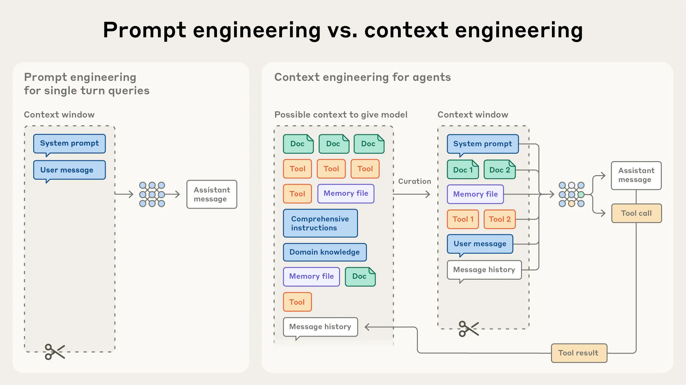

"faz uma consulta"MAX_PASSOS sem concluirA descrição da tool não é documentação para humano. Ela é contexto, e o modelo relê esse texto a cada volta do laço.
A cada volta, três coisas entram no histórico e nenhuma sai sozinha:
volta 1: pedido do usuário + chamada de tool + resultado da tool
volta 2: raciocínio + chamada de tool + resultado da tool
volta 3: raciocínio + chamada de tool + resultado da tool (80 mil tokens de log)
...
MAX_PASSOS. O contexto, não: ele cresce em toda iteraçãoO conjunto de estratégias para curar e manter os tokens úteis durante a inferência do modelo.
anthropic.com/engineering/effective-context-engineering-for-ai-agents

Fonte: Anthropic, Effective context engineering for AI agents (2025). anthropic.com/engineering/effective-context-engineering-for-ai-agents
Quanto mais tokens na janela, menor a precisão do modelo para recuperar uma informação específica. A queda é gradual, e varia de modelo para modelo
O modelo tem algo parecido com memória de trabalho. Cada token novo consome parte desse orçamento
Não existe um ponto onde o modelo quebra. Existe perda de precisão que cresce com o tamanho da janela.
Organizado em seções, com marcação em XML ou Markdown: informação de fundo, instruções, orientação sobre tools.
O contrato entre o agente e o ambiente. Autocontidas, com pouca sobreposição entre si e parâmetros sem ambiguidade.
Poucos casos canônicos e diversos, no lugar de um catálogo de casos de borda.
Para o modelo, exemplo vale como imagem
O que já foi dito e feito. É a parte que cresce sem pedir licença, e a primeira que precisa de poda.
A recomendação da Anthropic para o conjunto: informativo, e ao mesmo tempo enxuto.
Lógica de if e else escrita à mão para cada caso. Frágil, cara de manter, e quebra no primeiro cenário não previsto.
Orientação vaga, sem sinal concreto. Presume um entendimento compartilhado que não existe.
Específica o bastante para guiar o comportamento, flexível o bastante para servir de heurística em situação nova.
Esse é o mesmo problema que vocês vão enfrentar no AGENTS.md do projeto, e na semana que vem nas skills.
AGENTS.md, e não a cada pedidoPor que 'construa o sistema de reservas' falha e 'adicione o endpoint POST /reservas com validação de conflito' funciona?
Resumir a conversa perto do limite da janela e recomeçar com o resumo no lugar do histórico.
compaction, o /compact do Claude Code. Preserva decisão de arquitetura e bug aberto, descarta saída bruta de ferramenta
O agente escreve notas em arquivo, fora da janela, e relê quando precisa.
memória agêntica: NOTES.md, lista de tarefas. No exemplo da Anthropic com Pokémon, o agente atravessou 1.234 passos de treino sem perder a conta
Cada subtarefa roda em uma janela limpa e devolve só o resumo: dezenas de milhares de tokens de exploração viram de mil a dois mil de resposta.
Compactação para tarefa com muita ida e volta, anotação para trabalho que atravessa sessões, sub-agentes para exploração em paralelo.
O mesmo exercício da aula passada, agora mirando um PR maior, mais robusto, mais difícil: algo que o agente leve minutos ou horas para executar.
AGENTS.md na altitude certa, um NOTES.md com o que o agente descobriu lendo o código, e o critério de pronto, isto é, o teste que diz se acabou/clear entre eles, e deixem o agente rodar até o PR ficar de pédiario/2026-09-15.md: qual contexto vocês forneceram, o que o agente esqueceu no caminho, quantas voltas foram necessárias e o que precisou de correção à mãoCommit no dia. Leitura da semana: Anthropic, Effective context engineering for AI agents. Complementar: Barke, James e Polikarpova, Grounded Copilot, OOPSLA 2023 (arxiv.org/abs/2206.15000).